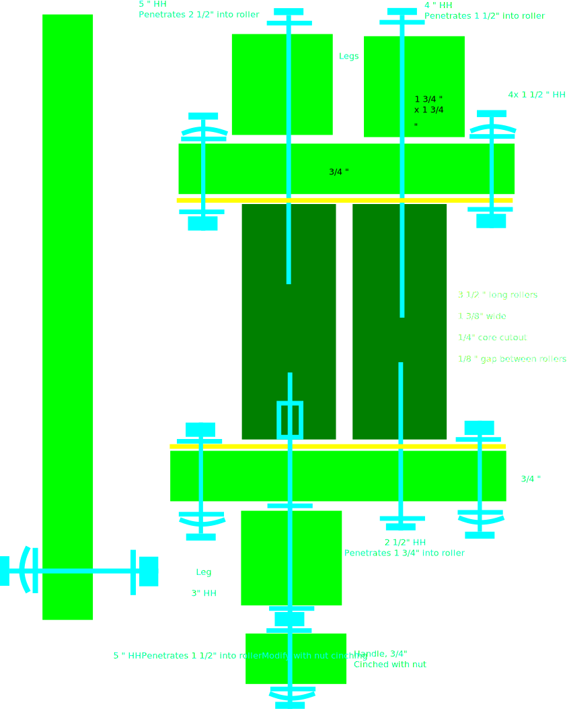

WI
- Cut 31/2" log piece
- Core with Bosch drill
- Repeat with hole saw from both sides
- Oil
Lengths
- Hole saw bit width 13/8", depth 1 3/4"
- Hole saw starter bit width 1/4"
- Bosch SDS foot-long bit is 3/16"
- Check shoulder bolt lengths for rotating roller and end-work.
- 2.25 to 2.5 "
- FW under bolt head only
